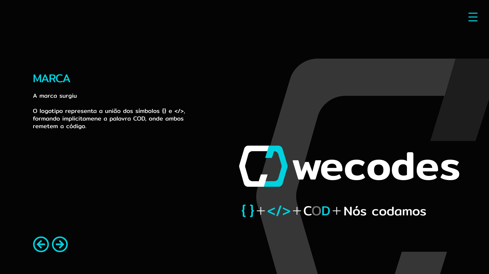
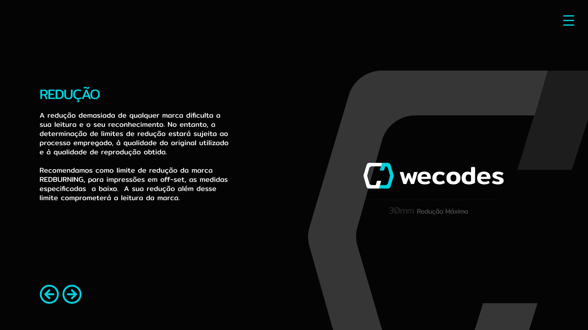
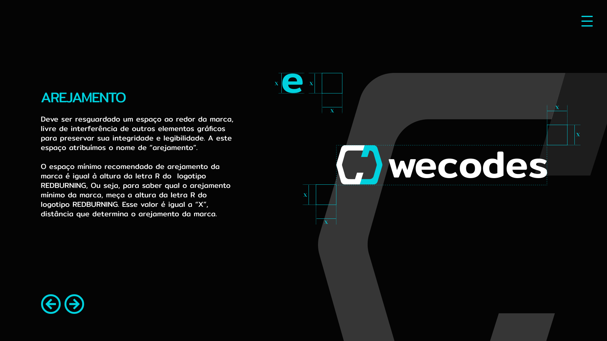

O código como
identidade.
Uma marca que parte da linguagem de programação para construir sua própria expressão. Símbolo, assinatura e diretrizes conectados pela mesma ideia: nós codamos.

Uma linguagem.
Uma assinatura.
O conceito aproxima o nome Wecodes de elementos reconhecíveis do universo da programação. As chaves e os sinais de marcação participam da construção de um símbolo que sugere a sequência COD.
A assinatura verbal complementa a leitura: “nós codamos”. O resultado conecta o desenho do símbolo ao significado do nome, sem depender de uma ilustração literal de tecnologia.

Um símbolo
conectado ao nome.
Os sinais associados ao código orientam a construção da marca e sua relação com a assinatura Wecodes.
Contraste com
um ponto de cor.
Preto, branco e ciano organizam a apresentação. O ciano destaca partes do símbolo, títulos e elementos de navegação das pranchas.
Presença em
diferentes escalas.
As diretrizes de redução e de espaço livre ao redor da assinatura tratam da leitura e da integridade da marca.
Desenhar a marca.
Cuidar de como ela aparece.
A apresentação inclui pranchas de redução e arejamento. Essas duas decisões aproximam o conceito de sua reprodução: preservar a legibilidade em tamanhos menores e manter distância de outros elementos.
Os exemplos abaixo mostram o material original do projeto. Abra cada prancha para examinar os detalhes em sua resolução completa.

Leitura da marca em diferentes tamanhos.

Espaço para preservar a integridade da assinatura.
A mesma identidade.
Novos pontos de contato.
Da fachada aos materiais impressos, o símbolo e a assinatura mantêm a mesma linguagem. Os mockups exploram essa continuidade no manual de identidade visual, nos cartões e nas aplicações em vestuário.
Preto, branco e ciano conectam a apresentação da marca aos contextos de uso. As imagens abaixo mostram a identidade em materiais físicos e em uma cena de trabalho em equipe.